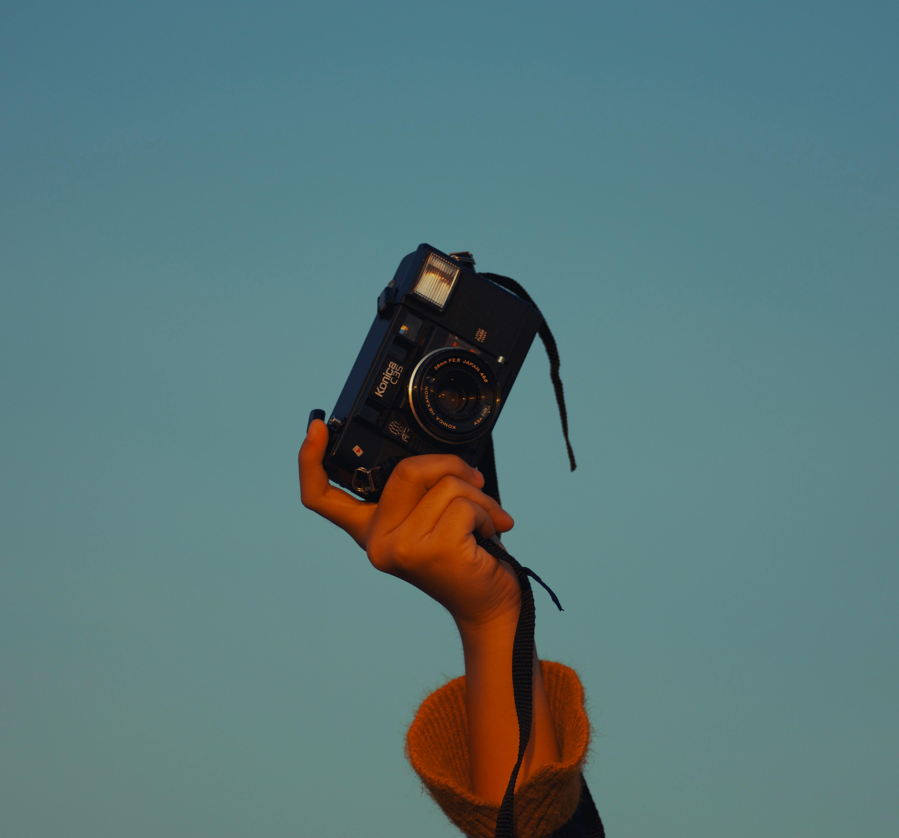

Olá, me chamo Ellen e, assim como você, sou uma entusiasta da fotografia. Meu objetivo aqui é apresentar a você a vasta gama de possibilidades que a fotografia oferece, além de fornecer dicas valiosas tanto para iniciantes quanto para aqueles que já têm alguma experiência. Aqui você encontrará recomendações de lugares para revelar seus filmes, sugestões de onde comprar câmeras, e muita inspiração para sua próxima sessão de fotos!
Seja você um iniciante ou um fotógrafo experiente, sempre há algo novo para aprender. Confira dicas sobre técnicas de fotografia, configurações de câmera e como tirar o máximo proveito do seu equipamento.
